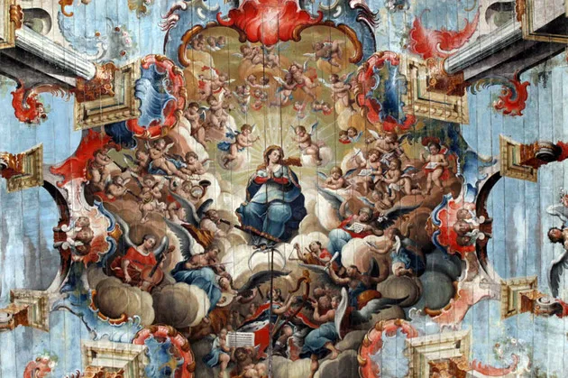
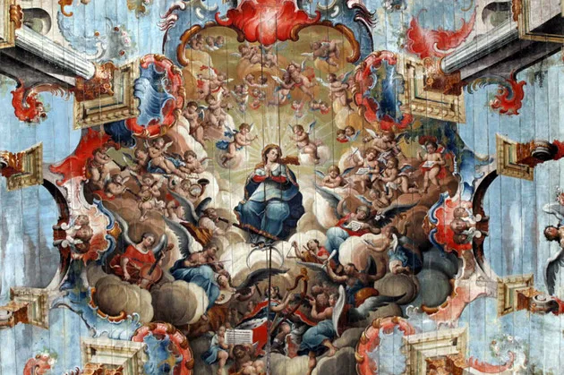
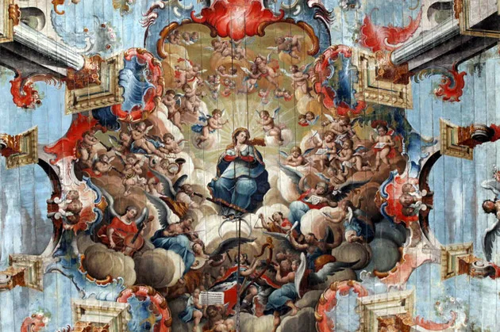
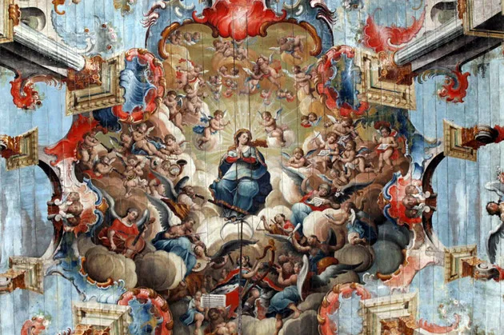

O barroco na literatura brasileira é um período que se desenvolveu principalmente no século XVII e se estendeu até o início do século XVIII. Esse estilo reflete a transição entre a época colonial e a formação da identidade brasileira, com influências europeias e características próprias do contexto local.
Colonização e Conflitos: O barroco surge em um período de intensas transformações sociais, políticas e econômicas. O Brasil estava se consolidando como colônia, com a exploração de recursos naturais e a interação entre indígenas, africanos e europeus.
Contrarreforma: O barroco está também relacionado ao movimento da Contrarreforma, que buscava reafirmar a fé católica frente ao protestantismo. Isso influenciou fortemente a literatura, que muitas vezes tinha uma temática religiosa.
O barroco na literatura brasileira deixou um legado significativo, influenciando as gerações seguintes e contribuindo para a formação da identidade literária do país. A busca por expressões artísticas complexas e a exploração de temas universais e locais foram fundamentais para o desenvolvimento da literatura brasileira.
Esse período é um reflexo das tensões e contradições da sociedade colonial, com uma produção literária rica e multifacetada que continua a ser estudada e admirada até hoje. O barroco não apenas moldou a literatura, mas também deixou uma marca duradoura na cultura brasileira como um todo.